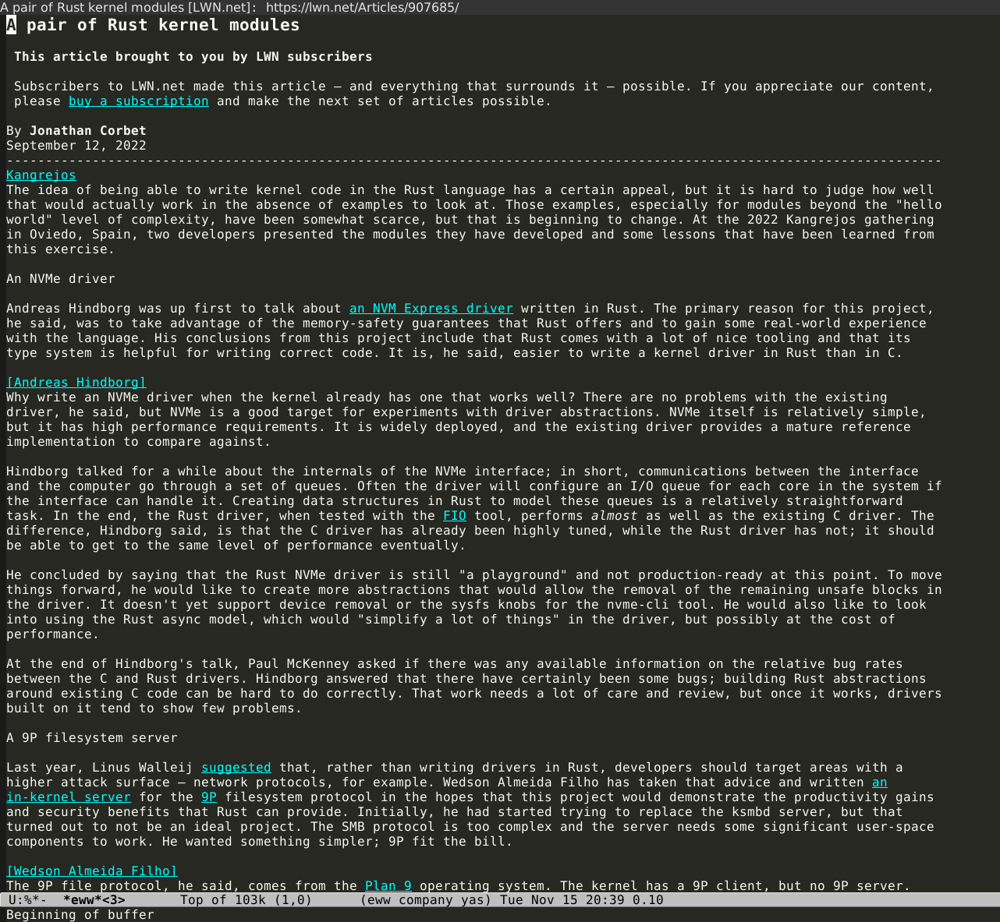
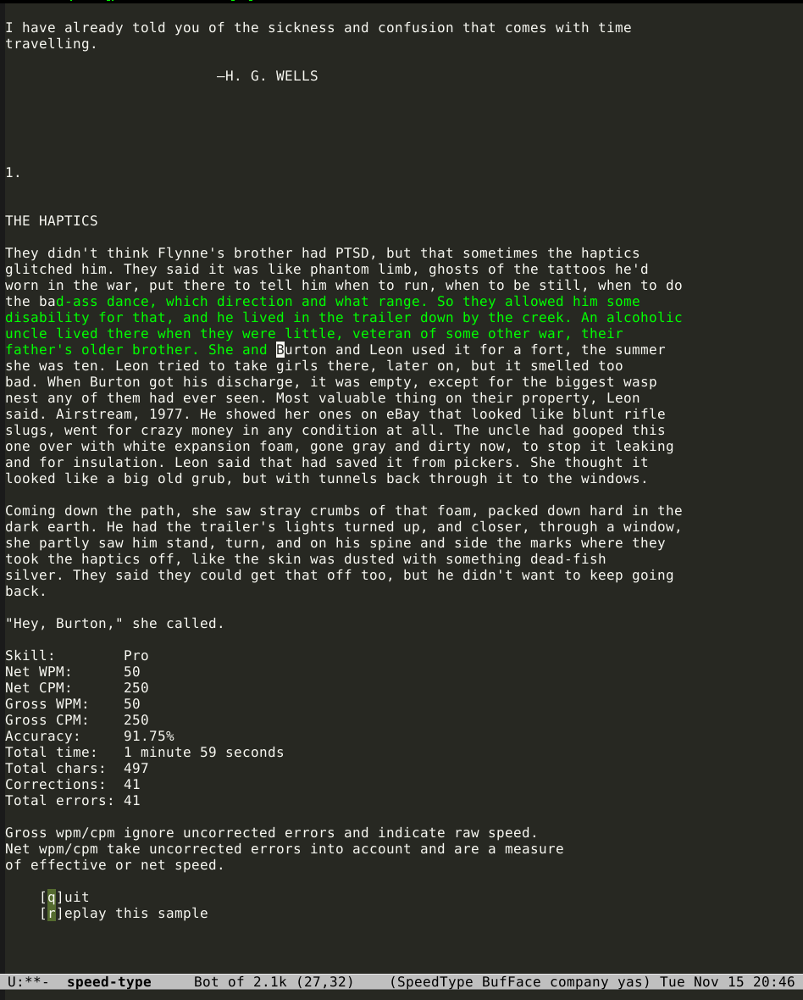

How to focus on technical content
Published on November 15, 2022 under the tag productivity, emacs
As a software developers we are in a constant race. The world of programming is constantly changing. There are new technologies, paradigms, frameworks and tools. To learn new things and stay relevant, true hackers develop a super skill. The ability to skim information quickly, focus on important things, filter the rest.
This awesome ability allows us to jump into unknown code, start using new framework or even learn new programming language in matter of hours or days. And that what is needed to work in industry with high rate of change in requirements and features required by customers. At the end of the day your brain is trained to do the skimming automatically and this is not always good.
For me the realization of something wrong came out some time ago when I was
trying to read new book on Haskell. I really wanted to enjoy the book and learn
few new things about the language which I already knew. But I’ve found myself
constantly jumping and skipping content. I was not focusing on the language of
the author, that did amazing job and had some deep insights on the language and
the functional programming paradigm.
Instead of focusing on the words and
learning new information, my brain was focusing on cycle of finding new things,
alert me about them, discarding them and repeating the cycle again. Same
experience repeated when I was reading blogs, browsing sites and in general when
I was consuming new technical content.
The solution for me was to slow down and reduce the distractions around the
content I consume. I am a long-time emacs user. One of the core principals in
emacs is text as universal interface. This means that you can do almost any
task using powerful text interfaces. Web browsing is one of the things you can
do without moving out from emacs.
The eww package allows you to browse sites in emacs and to display the textual information without leaving the emacs editor. It doesn’t run the fancy javascript code, which between us mostly used to track and collect information about you. I disabled the display of images by default. Mostly what I get is a clean text containing information and in case of emergency I can just jump to firefox/chrome using shortcut key.
Using textual browser allowed me to focus on blogs and articles I consume without all the visual distractions around them.

The second method I discovered was when I wanted to master touch typing technique. I am programming for almost 20 years (ouch !!!) but most of my career I wasn’t trying to type completely without looking at the keyboard. I was typing pretty fast and using emacs with all the shortcuts allowed me to stream my code very efficiently. But I didn’t try to type using the “home row method” and without looking at the keyboard at all. Then one day it hit me: I am already spending most of my time using keyboard so why not make an effort and master the typing techniques.
So I started to learn touch typing and almost every tutorial on this subject
will tell you that you need to practice to build the muscle memory. There are a
lot of good sites like keybr.com. But since I am an
emacs user I can just find a package that allows me to practice without leaving
the editor. I took the excellent speed-type
emacs extension and configured it to allow selecting any chunk of text in the
editor and practice typing on it (it will color correct letters in green, and
show me my speed statistics when I want).
Soon I learned that I can use this extension to focus more deeply on text. I would browse to some interesting article let’s say in hacker news using eww. I will switch to touch typing practicing mode with the content of the article and I will type it. This allows to slow down since average touch typing speed (60-70 words per minute) is much slower then average reading speed (250 words per minute). Then you are reading and typing the article in much slower phase but at the same time your mind is focusing on the words and your fingers build muscle memory to improve typing speed. Win Win.
